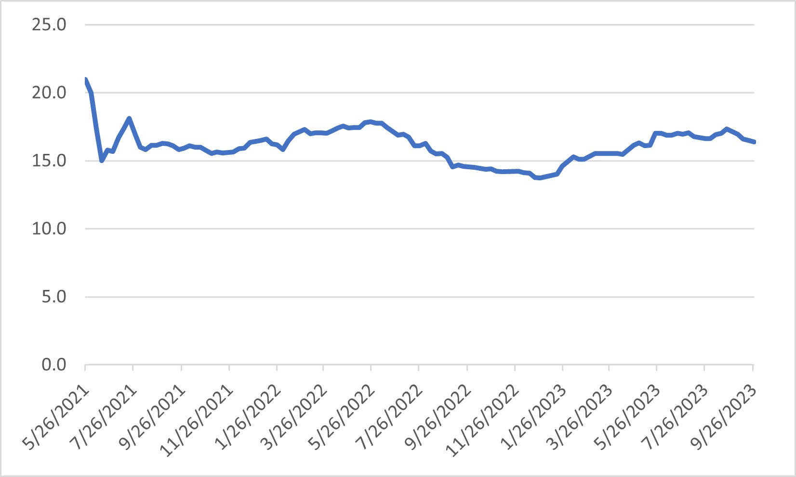

Hike Leadership - Obligation or Oppertunity?Actually, leading a hike is both an obligation and an opportunity. If the group is going to hike every Wednesday, someone has to take on the responsibility for choosing and leading the hike. This involves providing directions to the trailhead, a description of the hike, and getting it scheduled. Establishing new hikes is definitely encouraged, but there are also many hikes, already documented on the web site that can be chosen (see Descriptions). The leader is also encouraged to check out the hike before-hand by walking parts of it to make sure there are no road or gate closures or other “surprises” that would preclude doing the hike. It goes without saying (so I’ll say it) the leader must lead the hike (not necessarily in front but at least monitoring the radio), and then waiting at the hike end for the last person to come in. Finally, as a courtesy, the leader should provide snacks for all present. Advent of the Leader ListSoon after the group started hiking, it became obvious that some fair method of rotating leadership amongst the active hikers was needed. To be fair, this method must properly account for the participation of each hiker on each hike, as well as the number of hikers coming out for each hike week after week so that the intervals between leadership opportunities becomes relatively equal for each leader. In the early days, Mike Gessner used his method which mostly achieved reasonable interval spacing. After he retired from running the hike operations, Ron Forbess took over the task and immediately created a spread sheet, whose analog on the web site is the Leader List. Ron employed a method using a point system updated after each hike and documented on the Leader List. The leader list gives your progress towards leading a hike. Every time you attend a hike you receive one point. When you lead a hike, you lose points based on the 6-month rolling average of the hike attendance. In this way, everyone rotates hike leadership opportunities based on the frequency of their hike attendance and a number that approximates the number of hikers led on the hike. So, the time interval between your leadership opportunities will be a function of how often you hike, and the number of people coming out week after week to hike. The Top FiveEach week, top-down sorts are made of all the Active hiker rows and all of the Inactive hiker rows - based on the number in the last reckoning column. In this way, those hikers with the higher numbers move upwards with respect to the other hikers in each of these groups. Those five active hikers with the five largest numbers automatically become the Top Five, and it is now their obligation to choose a hike and have it scheduled. Rolling AverageIf only 10 hikers came out to hike each and every week without fail, then the fairest way would be to simply rotate the leadership role between the ten hikers resulting in the period between led hikes of 10 weeks for each hiker. Such is not the case however. Scanning the current No. of OTP Hikers, we find a variation of almost 2:1 (22/12). This is quite good and indicates good numbers of hikers coming out each week. However, greater numbers (4:1 or greater) have been observed in the past, probably due to the number of hikers available (vacations), and preferences such as people who don’t hike in the summer or winter because it is too hot or too cold. By using this number to reset the hike leader’s points, its variability will directly affect the interval between leadership opportunities causing the intervals to also vary by this ratio. What is needed is some sort of an average number of hikers from week to week that is also sensitive to long term seasonal variations due to vacations and preferences. Figure 1 shows the rolling average for a 26-hike window (26 weeks). After each Wednesday’s hike, the number of hikers in attendance for that day is averaged with the number of hikers attending each hike that occurred during the previous 25 hikes.  Figure 1. Rolling Average Attendance Since Post-COVID Reunification It was found that a 6-month (26 weeks) rolling average works best for our group. The average number obtained each week is then used to reset that leader’s point score (see later). The process is repeated after the next Wednesday’s hike, and so forth, with the 26-week averaging window rolling along 1 week at a time. Leader RotationReturning to the Leader List, you can see the points building up for a given hiker followed by a sudden reduction in the previous value. This indicates that that hiker just led a hike. The resulting number is the difference between the point accumulation the week before the hike and the reset number determined from the Rolling Average. As the hiker continues to hike in the weeks following, the points again begin to accumulate starting from the number remaining after the reset, progressing ultimately to the Top Five, and leadership rotation based on personal attendance and overall attendance, as fair a method as we can create.
Jim Carlin |